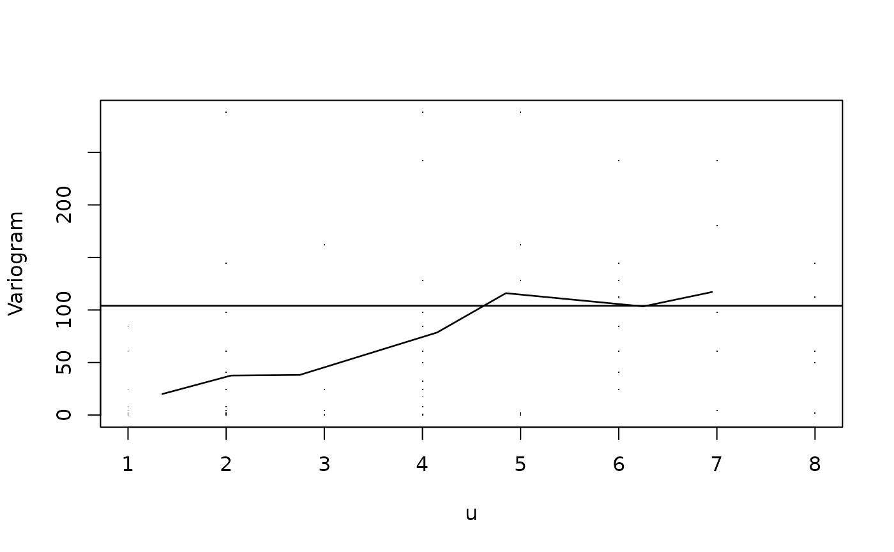

Plots the empirical variogram for observed measurements, of an
object of class vargm, obtained by using function
variogram.
Usage
# S3 method for class 'vargm'
plot(x, smooth = FALSE, bdw = NULL, follow.time = NULL, points = TRUE, ...)Arguments
- x
object of class
vargmobtained by using function.variogram- smooth
logical value to use a non-parametric estimator to calculate the variogram of all \(v_ijk\). The default is
FALSE, as it uses time averages.- bdw
bandwidth to use in the time averages. The default is
NULL, because this is calculated automatically.- follow.time
the interval of time we want to construct the variogram for. When
NULLthis is the maximum of the data.- points
logical value if the points \(v_ijk\) should be plotted.
- ...
other graphical options as in
par.
Examples
data(mental)
mental.unbalanced <- to.unbalanced(mental, id.col = 1,
times = c(0, 1, 2, 4, 6, 8),
Y.col = 2:7,
other.col = c(8, 10, 11))
names(mental.unbalanced)[3] <- "Y"
vgm <- variogram(indv = tail(mental.unbalanced[, 1], 30),
time = tail(mental.unbalanced[, 2], 30),
Y = tail(mental.unbalanced[, 3], 30))
plot(vgm)
